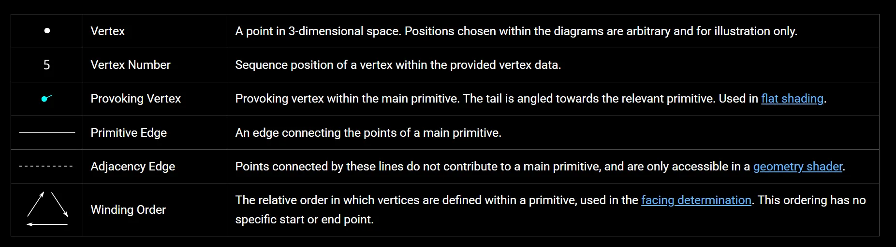
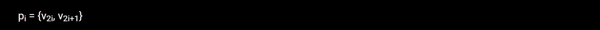
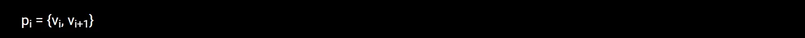
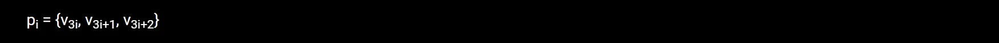
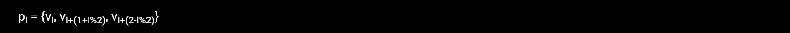
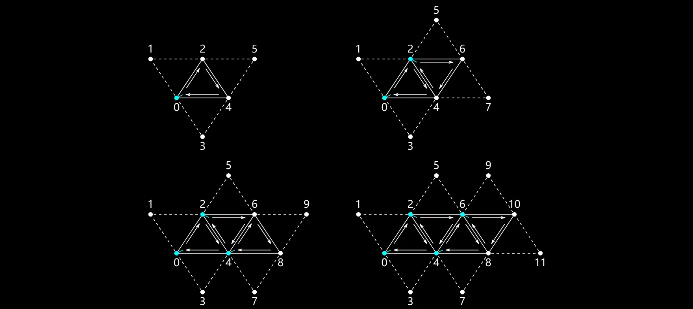
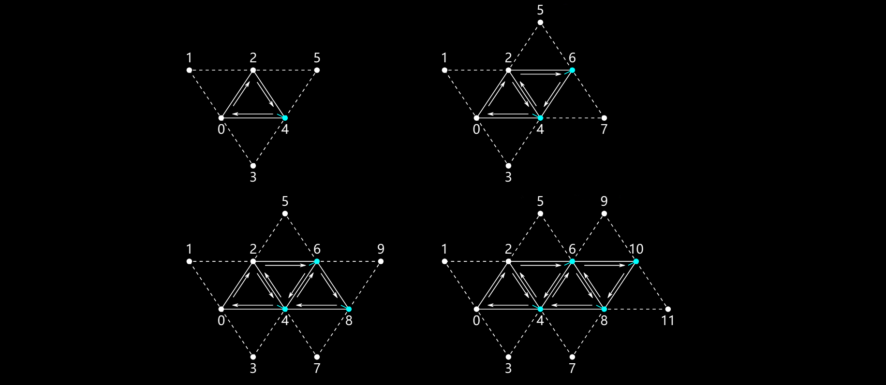

RealTime-Rendering20-Primitive Topology
Primitive Topology

Points
由于Points图元只有一个顶点，该唯一顶点即为ProvokeVertex，顶点数量等于图元数量：

Lines
每一对连续的顶点都定义了一条单一的Lines图元，生成的Lines图元数量等于顶点数量/2：
GL_FIRST_VERTEX_CONVENTION
GL_LAST_VERTEX_CONVENTION
LineStrip
生成的Lines图元数量为顶点数量- 1

GL_FIRST_VERTEX_CONVENTION
GL_LAST_VERTEX_CONVENTION
Triangles
生成的Triangles图元数量等于顶点数量/3

GL_FIRST_VERTEX_CONVENTION
GL_LAST_VERTEX_CONVETION
Triangle Strip
生成的Triangle图元数量等于顶点数量 - 2

GL_FIRST_VERTEX_CONVENTION
GL_LAST_VERTEX_CONVENTION
Triangle Fan
生成的Triangle图元数量等于顶点数量 - 2
GL_FIRST_VERTEX_CONVENTION
GL_LAST_VERTEX_CONVENTION
LineAdjacency
每组连续的四个顶点会定义一条带有相邻关系的线形图元，其计算公式为：
一条线的基本形状由第二个和第三个顶点来描述，而其余两个顶点则只能在几何着色器中访问到。
生成的Lines图元数量等于顶点数量/4
GL_FIRST_VERTEX_CONVENTION
GL_LAST_VERTEX_CONVENTION
lineStrip Adjacency
每个顶点与紧邻的顶点之间会定义一条具有相邻关系的线性基本图形，其依据的公式为：
GL_FIRST_VERTEX_CONVENTION
GL_LAST_VERTEX_CONVENTION
Triangle Adjacency
每连续六个顶点会根据以下公式定义一个带有相邻关系的单个三角形图元：
三角形基本形状是由第一个顶点、第三个顶点以及第五个顶点来描述的，而其余三个顶点则只能在几何着色器中访问到。
生成的图元数量为顶点数量/6
GL_FIRST_VERTEX_CONVENTION
GL_LAST_VERTEX_CONVENTION
TriangleStrip Adjacency
GL_FIRST_VERTEX_CONVENTION

GL_LAST_VERTEX_CONVENTION
